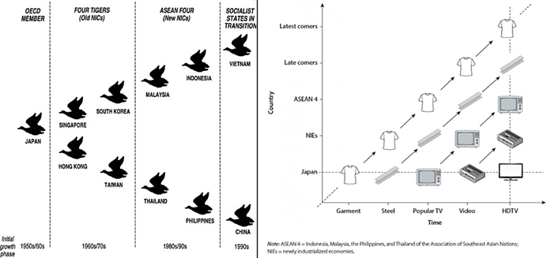

Nach dem Ende des Zweiten Weltkriegs setzte sich Japan an die Spitze der wirtschaftlichen Entwicklung in Ostasien. In zeitlichem Abstand folgten die sogenannten „Tigerstaaten“ (Südkorea, Taiwan, Singapur, Hongkong), gefolgt von anderen aufstrebenden Ökonomien wie den ASEAN-Ländern (z. B. Thailand, Malaysia, Indonesien, Vietnam) und inzwischen auch China (Abb. 1 links).
Die Grundannahme des Modells lautet, dass jedes Land eine Reihe von Phasen durchläuft, in denen es zunächst Technologien und Waren importiert, sie anschließend selbst produziert und schließlich in den Export übergeht. Dieses stufenweise Aufschließen hat zur Folge, dass immer neue Länder in die „Formation“ aufgenommen werden.
Dabei verändern sich auch die jeweiligen Schwerpunkte der Produktion: Die Länder an der Spitze (z. B. Japan) verlagern ihre Industrien zunehmend in Sektoren mit höherer Wertschöpfung (z. B. Hightech oder Dienstleistungen), während die nachfolgenden Staaten (z. B. Vietnam) Arbeitsschritte mit geringerer technischer Komplexität übernehmen (Abb. 1 rechts).

Phase 1: Importphase
Phase 2: Importsubstitution
Phase 3: Exportorientierung
Phase 4: Übergang zu komplexeren Industrien

Japan
- Ab 1945 konsequente Industrialisierung; Fokussierung auf Exportgüter (Autos, Elektronik, Maschinen).
- Durch hohe Investitionen in Bildung und Technologie konnte Japan schnell in die Spitzengruppe der Industrienationen aufsteigen.
Tigerstaaten (Südkorea, Taiwan, Singapur, Hongkong)
- Sie folgten Japan um etwa ein bis zwei Jahrzehnte verzögert.
- Staatliche Strategien (z. B. Unterstützung großer Konzerne in Südkorea oder Freihandelszonen in Hongkong) beschleunigten die Exporterfolge.
China
- Ab 1976 Öffnungspolitik und Einrichtung von Sonderwirtschaftszonen (z. B. Shenzhen).
- Aufstieg zum „Exportweltmeister“ vor allem im Bereich arbeitsintensiver Güter, später Übergang zu anspruchsvolleren Produkten (Smartphones, IT, E-Mobilität).
ASEAN-Länder (z. B. Vietnam, Indonesien)
- Zunehmende Attraktivität für Investoren, da Lohnkosten in China und anderen Tigerstaaten anstiegen.
- Vietnam ist aktuell ein Beispiel für ein Land, das vom niedrigen Lohnniveau profitiert und rasch in den Export einfacherer Industrieprodukte einsteigt.
- 1. Beschreibe, welche Branchen sich in den Ländern der ASEAN-Staaten und in Vietnam zukünftig entwickeln werden.
- 2. Erläutere anhand von Abb. 2 die Entwicklungsstrategien und -phasen ostasiatischer Länder nach dem Fluggänsemodell.
- 3. Beurteile, inwiefern China tatsächlich in das Modell der Fluggänse passt.